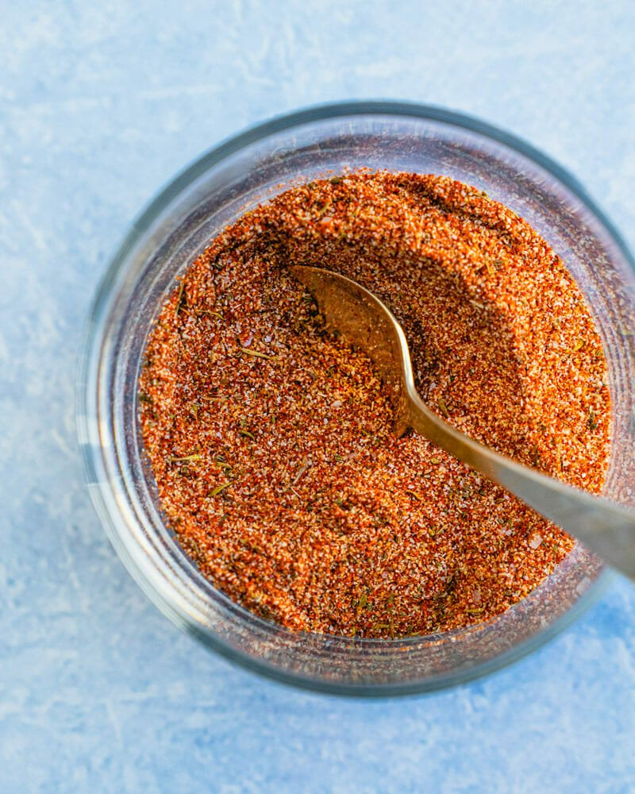

Taco Seasoning

Description
ATaco seasoning is a savory spice blend that's used to add warm, spicy, and smoky flavor to all kinds of dishes, from tacos to soups and casseroles. You can buy taco seasoning at the store or make it at home with ingredients you probably already have on hand.
seasoningmix.jpgIngredients
- 1 tablespoon vegetable oil
- 1 onion, chopped
- 3 cloves garlic, chopped
- 1 ¼ pounds ground turkey
- 1 (28 ounce) can enchilada sauce
Steps
- Heat oil in a large pot over medium heat. Add onion and garlic; cook and stir until onion is translucent, about 5 minutes. Stir in ground turkey; cook until no longer pink, about 5 minutes. Drain excess grease.
- Stir enchilada sauce and diced tomatoes into the pot. Simmer until flavors combine, about 20 minutes. Remove from heat.
- Preheat the oven to 375 degrees F (190 degrees C).
- Mix cottage cheese, egg, and cumin together in a small bowl.
- Spread 1/3 of the turkey sauce in the bottom of an 8-inch baking dish. Cover with 1/2 of the corn tortillas. Spread 1/2 of the cottage cheese mixture on top. Sprinkle 1/3 of the Mexican cheese on top. Repeat layers once more, ending with remaining turkey sauce and Mexican cheese.